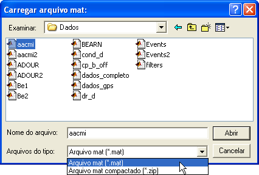

| Menu
Arquivo |
|
Carregar
Arquivo mat
Essa operação permite o carregamento de um arquivo de dados do MATLAB (.mat) até a versão 6.5, segundo a formatação adotada pelo IPEV ou segundo uma formatação alternativa adotada por algumas empresas.
O R_DAT também suporta o carregamento de um arquivo mat compactado (.zip).
Clique no menu “Arquivo ► Carregar arquivo mat” ou no botão na Barra de Ferramentas, selecione o tipo de arquivo (.mat ou .zip), localize o arquivo desejado e clique “Abrir”.
No caso de arquivos compactados, o arquivo zip deve ter o mesmo nome do arquivo mat.
O R_DAT não
impõe restrições adicionais quanto ao nome do
caminho ou do arquivo.

Também é
possível carregar um dos arquivos abertos
recentemente, que são apresentados na lista de arquivos
recentes do menu “Arquivo”.
|
Nota: Se o arquivo
atual não tiver sido salvo e o usuário quiser carregar outro arquivo, o
R_DAT questionará se o usuário deseja salvar o arquivo atual. |
Padronização
dos Arquivos mat
Para o correto carregamento pelo R_DAT, o conteúdo dos arquivos .mat devem seguir o padrão de armazenamento de dados adotado pelo IPEV ou o padrão alternativo adotado por algumas empresas. Os dois padrões são descritos a seguir:
Padrão de Armazenamento Adotado pelo IPEV:
O arquivo
.mat deve incluir as seguintes variáveis:
|
Variável: |
DADOS |
|
Descrição: |
Matriz de dados
numéricos, em que cada linha representa uma observação (presumidamente
sincronizada no tempo) e cada coluna representa um parâmetro distinto. |
|
Formatação: |
Matriz numérica
n × m não vazia (n observações por m parâmetros). Pode ser de qualquer formato numérico, mas será convertida em dupla precisão no carregamento (se estiver no formato de precisão simples, o formato será mantido quando o arquivo for salvo). A matriz deve
ter no mínimo um parâmetro e uma observação. Não há limite
no número máximo de observações e de parâmetros (a limitação será a
capacidade de memória e processamento do computador). |
|
|
|
|
Variável: |
PARAM |
|
Descrição: |
Matriz de texto
contendo os nomes dos parâmetros. Opcionalmente,
pode conter também as unidades dos parâmetros. |
|
Formatação: |
Há diferentes
formatos aceitos: 1- Matriz de texto
contendo um nome de parâmetro por linha (completados com espaços para
armazenamento em forma de matriz, sendo descartados no carregamento). 2- Vetor de
células de texto contendo os nomes dos parâmetros (não é necessário que
os nomes tenham o mesmo tamanho). 3-
Matriz de
células de texto no formato 2 × m ou m × 2, contendo os nomes dos
parâmetros. Nesse caso, o R_DAT assume que a segunda linha ou coluna
são os nomes das unidades. As unidades são incorporadas ao nome dos
parâmetros na forma “Parâmetro (unidade)“. As unidades
podem ou não estar entre parênteses ou colchetes. O número de
nomes de parâmetros deve ser igual ao número de colunas da matriz DADOS. Não são
permitidos nomes de parâmetros com mais de uma linha. Nomes de
parâmetros vazios ou somente com espaços serão substituídos por uma
interrogação (“?”). O tamanho
máximo dos nomes de parâmetro é de 48 caracteres (incluindo as
unidades). |
|
|
|
|
Variável: |
UNIT (opcional) |
|
Descrição: |
Matriz de texto
contendo as unidades dos parâmetros. No carregamento, essa matriz é
incorporada à matriz PARAM na forma “Parâmetro (unidade)“ e descartada. |
|
Formatação: |
Há diferentes
formatos aceitos: 1- Matriz de texto
contendo um nome de unidade por linha (completados com espaços para
armazenamento em forma de matriz, sendo descartados no carregamento). 2-
Vetor de
células de texto contendo os nomes das unidades (não é necessário que
os nomes tenham o mesmo tamanho). O número de
unidades deve ser igual ao número de parâmetros. As unidades
podem ou não estar entre parênteses ou colchetes. É permitido que
algumas unidades sejam vazias. O tamanho
máximo do nome do parâmetro (48 caracteres) inclui as unidades. Essa variável
também pode se chamar UNITS. |
|
|
|
|
Variável: |
INFOS (opcional) |
|
Descrição: |
Matriz de texto
livre contendo informações gerais do ensaio. |
|
Formatação: |
Matriz de texto
ou vetor de células de texto. |
|
|
|
|
Variável: |
CONFIG (opcional) |
|
Descrição: |
Matriz de texto
livre contendo a descrição da configuração do ensaio. |
|
Formatação: |
Matriz de texto
ou vetor de células de texto. |
|
|
|
|
Variável: |
ENSAIO (opcional) |
|
Descrição: |
Vetor de texto
livre contendo a descrição do ensaio. |
|
Formatação: |
Vetor de texto. |
|
|
|
|
Variável: |
NOMES (opcional) |
|
Descrição: |
Matriz de texto
livre contendo os nomes da tripulação. |
|
Formatação: |
Matriz de texto com duas linhas ou vetor de células de texto com dois elementos. Essa variável
também pode se chamar NAMES. |
|
|
|
|
Variável: |
OBS (opcional) |
|
Descrição: |
Matriz de texto
livre contendo observações gerais. |
|
Formatação: |
Matriz de texto
ou vetor de células de texto. |
|
|
|
Caso
o arquivo contenha variáveis
"INFOS", "CONFIG", “ENSAIO”, “NAMES” e “OBS”, o R_DAT irá
reorganizá-las de forma a compor a lista de propriedades do
arquivo, e então descartá-las. Caso o arquivo contenha a variável
"properties", as matrizes serão ignoradas.
Padrão de Armazenamento Alternativo:
Cada variável do arquivo .mat representa um parâmetro único, sendo que o nome do parâmetro é o próprio nome da variável.
As variáveis devem estar no formato de vetor coluna numérico, com pelo menos 100 observações.
Variáveis não-numéricas, que não estejam em forma de vetor coluna ou que tenham menos de 100 linhas serão descartadas.
O número de observações será dado pelo número de linhas da variável mais extensa. Variáveis com número inferior de linhas serão descartadas.
|
Variáveis: |
Param1, Param2, Param3, ... |
|
Descrição: |
Variáveis isoladas representando cada uma um parâmetro distinto. Cada linha representa uma observação (presumidamente
sincronizada no tempo com os outros parâmetros). |
|
Formatação: |
Vetores coluna numéricos n × 1 com pelo menos 100 linhas. Todos os parâmetros devem conter o mesmo número de observações. Podem ser de
qualquer formato numérico, mas serão convertidos em dupla precisão no
carregamento. Não há limite no número máximo de observações e de parâmetros (a limitação será a capacidade de memória e processamento do computador). |
|
Nota: Caso o arquivo ou as variáveis não atendam às formatações previstas, o R_DAT informará o usuário e cancelará a operação. |
Exemplos
de Matrizes
Exemplos de
matrizes válidas são apresentados a seguir:
Padrão Adotado pelo IPEV:
DADOS =
[ 0.0 286.3
12020 0.5363
0.1
286.5 12050 0.5369
0.2
286.6 12040 0.5370
0.3
286.8 12030 0.5373
0.4
287.1 12020 0.5377 ];
PARAM =
[ 'Tempo (s)'
'Vc (kt)
'
'Zp
(ft)
'
'Mach
' ];
PARAM =
[ 'Tempo'
UNIT = [ 's '
'Vc '
'kt'
'Zp '
'ft'
'Mach '
];
' ' ];
PARAM = {
'Tempo (s)', 'Vc
(kt)', 'Zp (ft)', 'Mach'
};
PARAM = {
'Tempo', 'Vc',
'Zp', 'Mach' };
UNIT = { 's'
, 'kt', 'ft', ''
};
PARAM =
{ 'Tempo', 'Vc', 'Zp', 'Mach'
's'
, 'kt', 'ft', ''
};
PARAM =
{ 'Tempo', 's'
'Vc' , 'kt'
'Zp'
, 'ft'
'Mach' , '' };
INFOS =
[ 'Local:
BACO
'
'Data: 23/08/2008
'
'Tripulação: FAB/LEO'
'Aeronave: F-5FM
'
'Matrícula: 4806
' ];
CONFIG
= { 'CL: Tq 275'
'INB: BAFG-230'
'OUTB: BAFG-230'
'TIP:
MAA-1A'
'Lastro: Vazio' };
ENSAIO = 'Calib Anemo';
NAMES = [ 'SIC'
'LED' ];
NAMES = { 'SVA', 'THA' };
Padrão Alternativo:
TIME = [ 0.0000 ZP = [ 10010.1237 VC = [ 245.9473
0.0100 10010.4592 246.0126
0.0200 10010.5875 246.0234 . . .
0.0300 10010.7028 246.1583
: : :
10.0000 ]; 10030.0938 ]; 247.6467 ];
Alterações
nas Matrizes
No
carregamento, as matrizes sofrem algumas alterações para
padronizar e facilitar a manipulação pelo R_DAT:
Padrão Adotado pelo IPEV:
1- Conversão de
DADOS para dupla precisão:
Caso os
dados estejam em formato numérico de precisão simples (single)
ou inteiros (int8/16/32/64, uint8/16/32/64), a matriz será convertida
para precisão dupla (double),
para
possibilitar a manipulação pelo R_DAT;
2- Eliminação
de prefixos de telemetria:
Os prefixos de telemetria são definidos por uma série de códigos separados por dois-pontos antes do nome de cada parâmetro. Caso os
nomes de parâmetros contenham esses prefixos e a opção remover prefixos ao carregar arquivo estiver marcada, o R_DAT irá removê-los automaticamente.
O
parâmetro “ST1:SB1:PB”, por exemplo, seria alterado para “PB”.
Essa operação pode ser realizada também pelo editor de nomes de parâmetros.
3- Incorporação de
unidades:
As unidades apresentadas na matriz UNIT serão imcorporadas à matriz PARAM no formato “Parâmetro (unidade)”. Uma vez incorporada, a matriz UNIT será descartada.
Caso a
matriz PARAM seja do tipo célula e tenha duas linhas (ou colunas) com
texto, o
R_DAT assume que a segunda linha (ou coluna) são as unidades e as incorporará à
matriz
PARAM no formato “Parâmetro (unidade)”.
4- Limitação no
tamanho dos nomes:
Os
nomes de parâmetros (incluindo as unidades) que ultrapassarem 48
caracteres
serão truncados e o usuário será informado.
5- Numeração
dos parâmetros:
A
matriz PARAM receberá uma numeração sequencial no formato “XX-Parâmetro”.
Essa numeração não é considerada parte do nome dos parâmetros e não
pode ser
alterada pelo usuário.
Caso os
nomes dos parâmetros já incluam uma numeração, o R_DAT a substituirá,
de forma
a garantir a correta numeração dos parâmetros.
Nas
operações que alteram a ordem ou a quantidade de parâmetros, a
numeração será
atualizada automaticamente.
A
numeração tem no mínimo dois algarismos e não tem limite máximo.
6- Inserção do
parâmetro No.OBS.:
Será
inserido nas matrizes DADOS e PARAM o parâmetro “No.OBS.” (Número de
Observações). Esse parâmetro ocupa sempre a última posição nas matrizes
e
numera de forma sequencial as linhas da matriz DADOS. Caso o parâmetro
já
esteja incluído, o R_DAT o atualizará, de forma a garantir a correta
numeração
das observações. Não é possível ao usuário alterar ou remover esse
parâmetro.
Nas
operações que alteram a ordem ou a quantidade de observações, a
numeração será
atualizada automaticamente.
As variáveis "INFOS", "CONFIG", “ENSAIO”, “NAMES” e “OBS” serão manipuladas de forma a compor a variável "properties", descrita na ajuda da operação "Salvar arquivo mat".
Padrão Alternativo:
1- Montagem da matriz PARAM:
Os
nomes das variáveis identificadas como parâmetros serão atribuídos
sequencialmente à matriz de célula de texto PARAM. Os parâmetros
reconhecidos como tempo serão apresentados primeiro, em ordem
alfabética, seguidos dos demais parâmetros também em ordem alfabética.
2- Limitação no
tamanho dos nomes:
Os
nomes de parâmetros que ultrapassarem 48
caracteres
serão truncados e o usuário será informado.
3- Montagem da matriz DADOS de dupla precisão:
Os parâmetros individuais serão concatenados lateralmente de forma a gerar a matriz de dados n × m (n observações por m parâmetros). Caso os
dados estejam em formato numérico de precisão simples (single)
ou inteiros (int8/16/32/64, uint8/16/32/64), os vetores serão convertidos
para precisão dupla (double),
para
possibilitar a manipulação pelo R_DAT;
4- Numeração
dos parâmetros:
A
matriz PARAM receberá uma numeração sequencial no formato “XX-Parâmetro”.
Essa numeração não é considerada parte do nome dos parâmetros e não
pode ser
alterada pelo usuário.
Nas
operações que alteram a ordem ou a quantidade de parâmetros, a
numeração será
atualizada automaticamente.
A
numeração tem no mínimo dois algarismos e não tem limite máximo.
5- Inserção do
parâmetro No.OBS.:
Será
inserido nas matrizes DADOS e PARAM o parâmetro “No.OBS.” (Número de
Observações). Esse parâmetro ocupa sempre a última posição nas matrizes
e
numera de forma sequencial as linhas da matriz DADOS. Caso o parâmetro
já
esteja incluído, o R_DAT o atualizará, de forma a garantir a correta
numeração
das observações. Não é possível ao usuário alterar ou remover esse
parâmetro.
Nas
operações que alteram a ordem ou a quantidade de observações, a
numeração será
atualizada automaticamente.
|
Nota:
Matrizes de dados muito grandes (da ordem de milhões de
elementos)
podem causar lendidão em operações que necessitam de muito
processamento, ou até esgotamento de memória. Nesse caso, é recomendado
dividir o arquivo em matrizes menores ou reduzir a cadência ou o número
de parâmetros. |
| |
Menu
Arquivo |
Importar
dados |
|